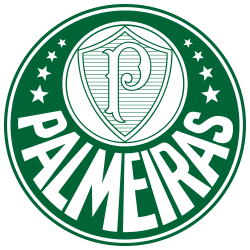

O Palmeiras, fundado como Palestra Itália em 1914 por imigrantes italianos, é um dos maiores clubes do Brasil, conhecido pela sua trajetória vitoriosa no futebol. O nome foi alterado para Sociedade Esportiva Palmeiras em 1942, devido à Segunda Guerra Mundial. O clube tem uma vasta galeria de títulos, incluindo múltiplos Campeonatos Brasileiros, Copas do Brasil e Libertadores, e é famoso por ídolos como Leão, Marcos e Ademir da Guia. O estádio atual do clube é o Allianz Parque, e a sua «Academia» foi um período de glória, assim como a parceria com a Parmalat e mais recentemente a chegada do treinador Abel Ferreira.
